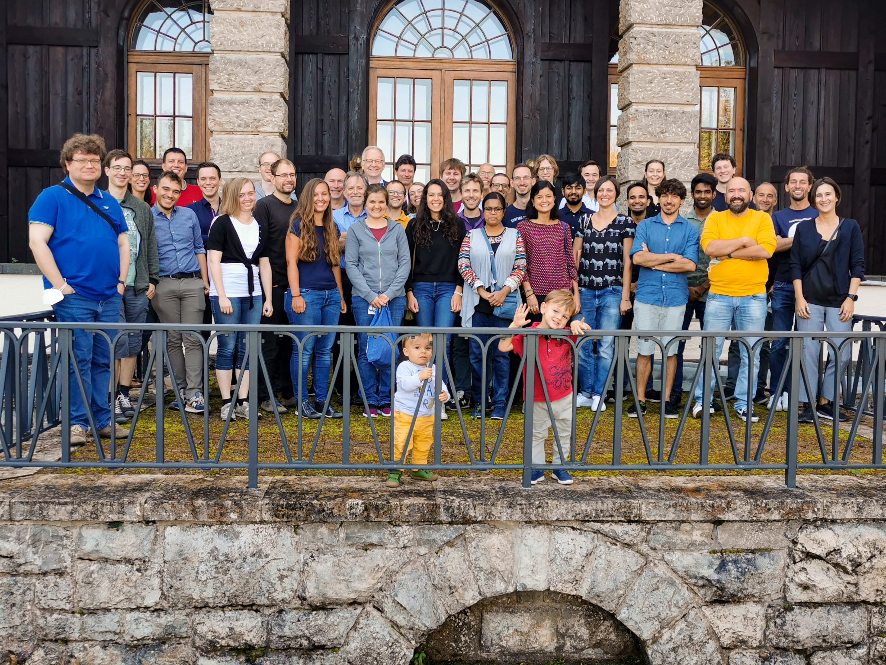

CRESST

The Cryogenic Rare Event Search with Superconducting Thermometers (CRESST) is a direct dark matter experiment at the Gran Sasso underground laboratory. It uses cryogenic calorimeters with transition-edge sensors, operated at millikelvin temperatures, to search for tiny nuclear recoils from light dark matter. The next CRESST upgrade will deploy many detectors with different target masses and materials, aiming for unprecedented sensitivity to sub-GeV dark matter while also addressing the low-energy excess backgrounds that currently limit many low-threshold searches.
Spin-dependent Dark Matter


In CRESST's lithium aluminate analysis (Phys. Rev. D 106, 092008), two CRESST-III detector modules with 10.46 g LiAlO2 targets were used to test spin-dependent dark matter interactions. By exploiting the lithium and aluminum isotopes in the target material, the analysis set leading limits on spin-dependent interactions with protons and neutrons for dark matter masses between 0.25 and 1.5 GeV/c2.